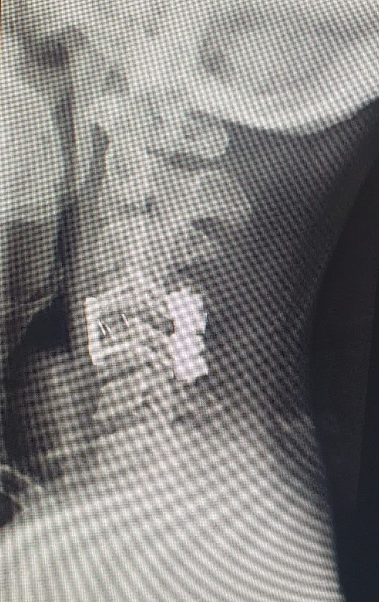

About Run4Ricky
Run4Ricky is a movement to promote awareness and inclusion for individuals with disabilities. We believe in a future where everyone can thrive, no matter their ability.
Our Mission
Through advocacy, education, and community events, we aim to create equal opportunities and support networks for disabled individuals and their families. Our mission is rooted in compassion, dignity, and a belief that everyone deserves access to resources, inclusion, and a chance to thrive.
Ricky’s Journey
In December 2022,Riccardo Barbieri, suffered a life-altering spinal cord injury during a diving accident fracturing C4/C5. What began as a joyful exploration of the Omani mountains turned into a challenging journey toward recovery and reinvention. The accident not only transformed Ricky’s life but also illuminated the profound lack of resources, support, and community awareness for individuals with spinal cord injuries in Italy and beyond. From the hospital bed to intensive rehabilitation, Ricky experienced firsthand the emotional, physical, and financial hurdles faced by people living with paralysis. Family and friends rallied around him, offering encouragement, hope, and small acts of kindness that made all the difference. But he also encountered obstacles: limited access to adaptive sporting equipment, expensive home modifications, and a scarcity of educational materials tailored to post-injury life. Inspired by the compassion that carried him through the darkest days and driven by a desire to ensure that no one faces these challenges alone, Ricky and twin brother established the Run4Ricky movement. Our organization is built on the belief that every person deserves the opportunity to reclaim independence, pursue dreams, and live life to the fullest, regardless of physical limitations.
Milestones & Timeline
-
Diving accident in the Oman mountains: Fractured my spinal cord, then hiked five hours back to the ambulance.
-

Medical coma and surgery: Placed on a ventilator and put into a coma; underwent a 12‑hour operation to stabilize my spine.
-
Airlift to Milan: After two weeks in Oman, I was airlifted overland to Niguarda Hospital in Milan—and finally woke up.
-
Intensive care challenges: Spent two months in ICU, survived heart attacks and a stroke, still unable to breathe unaided.

-
First therapies: Transferred to Niguarda’s spinal‑cord unit; began respiratory and physical physiotherapy.

-
Move to Balgrist, Switzerland: Began intensive physiotherapy after 3½ months at Niguarda.
-
Relearning movement: Learned to stand, transfer, and mechanically walk; drastically reduced my medications.
-
Return Home: After 14 months of rehabilitation and hospitalisation Ricky goes home.

-
Launch of Run4Ricky: Founded with twin brother a charity initiative to raise awareness and support spinal‑cord research.

-
First marathon: My twin brother completed his first marathon, raising funds for spinal‑cord research.

-
Future goals: Many more milestones to come…